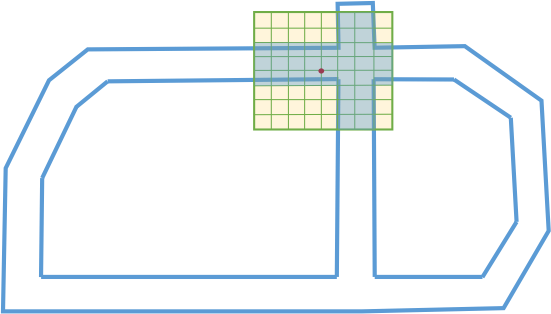

3D 障碍物感知¶
Apollo解决的障碍物感知问题：
高精地图ROI过滤器（HDMap ROI Filter）
基于卷积神经网络分割（CNN Segmentation）
MinBox 障碍物边框构建（MinBox Builder）
HM对象跟踪（HM Object Tracker）
高精地图ROI过滤器¶
ROI（The Region of Interest）指定从高精地图检索到包含路面、路口的可驾驶区域。高精地图 ROI 过滤器（往下简称“过滤器”）处理在ROI之外的激光雷达点，去除背景对象，如路边建筑物和树木等，剩余的点云留待后续处理。
给定一个高精地图，每个激光雷达点的关系意味着它在ROI内部还是外部。 每个激光雷达点可以查询一个车辆周围区域的2D量化的查找表（LUT）。过滤器模块的输入和输出汇总于下表。
输入 |
输出 |
|---|---|
点云: 激光雷达捕捉的3D点数据集 |
由高精地图定义的ROI内的输入点索引。 |
高精地图: 多边形集合，每个多边形均含有一个有序的点集。 |
一般来说，Apollo 高精地图 ROI过滤器有以下三步：
坐标转换
ROI LUT构造
ROI LUT点查询
坐标转换¶
对于（高精地图ROI）过滤器来说，高精地图数据接口被定义为一系列多边形集合，每个集合由世界坐标系点组成有序点集。高精地图ROI点查询需要点云和多边形处在相同的坐标系，为此，Apollo将输入点云和HDMap多边形变换为来自激光雷达传感器位置的地方坐标系。
ROI LUT构造¶
Apollo采用网格显示查找表（LUT），将ROI量化为俯视图2D网格，以此决定输入点是在ROI之内还是之外。
如图1所示，该LUT覆盖了一个矩形区域，该区域位于高精地图边界上方，以普通视图周围的预定义空间范围为边界。它代表了与ROI关联网格的每个单元格（如用1/0表示在ROI的内部/外部）。 为了计算效率，Apollo使用 扫描线算法和 位图编码来构建ROI LUT。
蓝色线条标出了高精地图ROI的边界，包含路标与路口。红色加粗点表示对应于激光雷达传感器位置的地方坐标系原始位置。2D网格由8*8个绿色正方形组成，在ROI中的单元格，为蓝色填充的正方形，而之外的是黄色填充的正方形。
ROI LUT点查询¶
基于ROI LUT，查询每个输入点的关系使用两步认证。对于点查询过程，Apollo数据编译输出如下，:
检查点在ROI LUT矩形区域之内还是之外。
查询LUT中相对于ROI关联点的相应单元格。
收集属于ROI的所有点，并输出其相对于输入点云的索引。
用户定义的参数可在配置文件modules/perception/model/hdmap_roi_filter.config中设置，HDMap ROI Filter 参数使用参考如下表格：
参数名称 |
使用 |
默认 |
|---|---|---|
range |
基于LiDAR传感器点的2D网格ROI LUT的图层范围），如(-70, 70)*(-70, 70) |
70.0 米 |
cell_size |
用于量化2D网格的单元格的大小。 |
0.25 米 |
extend_dist |
从多边形边界扩展ROI的距离。 |
0.0 米 |
基于CNN的障碍物分割¶
高精地图 ROI过滤之后，Apollo得到已过滤、只包含属于ROI内的点云，大部分背景障碍物，如路侧的建筑物、树木等均被移除，ROI内的点云被传递到分割模块。分割模块检测和划分前景障碍物，例如汽车，卡车，自行车和行人。
输入 |
输出 |
|---|---|
点云（3D数据集） |
对应于ROI中的障碍物对象数据集 |
表示在HDMap中定义的ROI内的点的点索引 |
|
Apollo 使用深度卷积神经网络提高障碍物识别与分割的精度，障碍物分割包含以下四步： |
通道特征提取
基于卷积神经网络的障碍物预测
障碍物集群
后期处理
卷积神经网络详细介绍如下：
通道特征提取¶
给定一个点云框架，Apollo在地方坐标系中构建俯视图（即投影到X-Y平面）2D网格。 基于点的X、Y坐标，相对于LiDAR传感器原点的预定范围内，每个点被量化为2D网格的一个单元。 量化后，Apollo计算网格内每个单元格中点的8个统计测量，这将是下一步中传递给CNN的输入通道特征。
计算的8个统计测量：
单元格中点的最大高度
单元格中最高点的强度
单元格中点的平均高度
单元格中点的平均强度
单元格中的点数
单元格中心相对于原点的角度
单元格中心与原点之间的距离
二进制值标示单元格是空还是被占用
基于卷积神经网络的障碍物预测¶
基于上述通道特征，Apollo使用深度完全卷积神经网络（FCNN）来预测单元格障碍物属性，包括潜在物体中心的偏移位移（称为中心偏移）、对象性 积极性和物体高度。如图2所示，网络的输入为 W x H x C 通道图像，其中：
W 代表网格中的列数
H 代表网格中的行数
C 代表通道特征数
完全卷积神经网络由三层构成：
下游编码层（特征编码器）
上游解码层（特征解码器）
障碍物属性预测层（预测器）
特征编码器将通道特征图像作为输入，并且随着特征抽取的增加而连续下采样其空间分辨率。 然后特征解码器逐渐对特征图像 上采样到输入2D网格的空间分辨率，可以恢复特征图像的空间细节，以促进单元格方向的障碍物位置、速度属性预测。 根据具有非线性激活（即ReLu）层的堆叠卷积/分散层来实现 下采样和 上采样操作。
障碍物聚类¶
在基于CNN的预测之后，Apollo获取单个单元格的预测信息。利用四个单元对象属性图像，其中包含：
中心偏移
对象性
积极性
对象高度
为生成障碍物，Apollo基于单元格中心偏移，预测构建有向图，并搜索连接的组件作为候选对象集群。
如图3所示，每个单元格是图的一个节点，并且基于单元格的中心偏移预测构建有向边，其指向对应于另一单元的父节点。
如图3，Apollo采用压缩的联合查找算法（Union Find algorithm ）有效查找连接组件，每个组件都是候选障碍物对象集群。对象是单个单元格成为有效对象的概率。因此，Apollo将非对象单元定义为目标小于0.5的单元格。因此，Apollo过滤出每个候选对象集群的空单元格和非对象集。
(a) 红色箭头表示每个单元格对象中心偏移预测；蓝色填充对应于物体概率不小于0.5的对象单元。
(b) 固体红色多边形内的单元格组成候选对象集群。
由五角星填充的红色范围表示对应于连接组件子图的根节点（单元格）。
一个候选对象集群可以由其根节点彼此相邻的多个相邻连接组件组成。
后期处理¶
聚类后，Apollo获得一组候选对象集，每个候选对象集包括若干单元格。
在后期处理中，Apollo首先对所涉及的单元格的积极性和物体高度值，平均计算每个候选群体的检测置信度分数和物体高度。 然后，Apollo去除相对于预测物体高度太高的点，并收集每个候选集中的有效单元格的点。 最后，Apollo删除具有非常低的可信度分数或小点数的候选聚类，以输出最终的障碍物集/分段。
用户定义的参数可以在modules/perception/model/cnn_segmentation/cnnseg.conf的配置文件中设置。 下表说明了CNN细分的参数用法和默认值：
参数名称 |
使用说明 |
默认值 |
|---|---|---|
objectness_thresh |
用于在障碍物聚类步骤中过滤掉非对象单元的对象的阈值。 |
0.5 |
use_all_grids_for_clustering |
指定是否使用所有单元格在障碍物聚类步骤中构建图形的选项。如果不是，则仅考虑占用的单元格。 |
true |
confidence_thresh |
用于在后期处理过程中滤出候选聚类的检测置信度得分阈值。 |
0.1 |
height_thresh |
如果是非负数，则在后处理步骤中将过滤掉高于预测物体高度的点。 |
0.5 meters |
min_pts_num |
在后期处理中，删除具有小于min_pts_num点的候选集群。 |
3 |
use_full_cloud |
如果设置为true，则原始点云的所有点将用于提取通道特征。 否则仅使用输入点云的点（即，HDMap ROI过滤器之后的点）。 |
true |
gpu_id |
在基于CNN的障碍物预测步骤中使用的GPU设备的ID。 |
0 |
feature_param {width} |
2D网格的X轴上的单元格数。 |
512 |
feature_param {height} |
2D网格的Y轴上的单元格数。 |
512 |
feature_param {range} |
2D格栅相对于原点（LiDAR传感器）的范围。 |
60 meters |
注意：提供的模型是一个样例，仅限于实验所用。
MinBox 障碍物边框构建¶
对象构建器组件为检测到的障碍物建立一个边界框。因为LiDAR传感器的遮挡或距离，形成障碍物的点云可以是稀疏的，并且仅覆盖一部分表面。因此，盒构建器将恢复给定多边形点的完整边界框。即使点云稀疏，边界框的主要目的还是预估障碍物（例如，车辆）的方向。同样地，边框也用于可视化障碍物。
算法背后的想法是找到给定多边形点边缘的所有区域。在以下示例中，如果AB是边缘，则Apollo将其他多边形点投影到AB上，并建立具有最大距离的交点对，这是属于边框的边缘之一。然后直接获得边界框的另一边。通过迭代多边形中的所有边，在以下图4所示，Apollo确定了一个6边界边框，将选择具有最小面积的方案作为最终的边界框。
HM对象跟踪¶
HM对象跟踪器跟踪分段检测到的障碍物。通常，它通过将当前检测与现有跟踪列表相关联，来形成和更新跟踪列表，如不再存在，则删除旧的跟踪列表，并在识别出新的检测时生成新的跟踪列表。 更新后的跟踪列表的运动状态将在关联后进行估计。 在HM对象跟踪器中，匈牙利算法(Hungarian algorithm)用于检测到跟踪关联，并采用 鲁棒卡尔曼滤波器(Robust Kalman Filter) 进行运动估计。
检测跟踪关联（Detection-to-Track Association）¶
当将检测与现有跟踪列表相关联时，Apollo构建了一个二分图，然后使用 匈牙利算法以最小成本（距离）找到最佳检测跟踪匹配。
计算关联距离矩阵
首先，建立一个关联距离矩阵。根据一系列关联特征（包括运动一致性，外观一致性等）计算给定检测和一条轨迹之间的距离。HM跟踪器距离计算中使用的一些特征如下所示：
关联特征名称 |
描述 |
|---|---|
location_distance |
评估运动一致性 |
direction_distance |
评估运动一致性 |
bbox_size_distance |
评估外观一致性 |
point_num_distance |
评估外观一致性 |
histogram_distance |
评估外观一致性 |
此外，还有一些重要的距离权重参数，用于将上述关联特征组合成最终距离测量。
匈牙利算法的二分图匹配
给定关联距离矩阵，如图5所示，Apollo构造了一个二分图，并使用 匈牙利算法通过最小化距离成本找到最佳的检测跟踪匹配。它解决了O(n^3)时间复杂度中的赋值问题。 为了提高其计算性能，通过删除距离大于合理的最大距离阈值的顶点，将原始的二分图切割成子图后实现了匈牙利算法。
跟踪动态预估 （Track Motion Estimation）¶
在检测到跟踪关联之后，HM对象跟踪器使用 鲁棒卡尔曼滤波器来利用恒定速度运动模型估计当前跟踪列表的运动状态。 运动状态包括锚点和速度，分别对应于3D位置及其3D速度。 为了克服由不完美的检测引起的可能的分心，在跟踪器的滤波算法中实现了鲁棒统计技术。
观察冗余
在一系列重复观测中选择速度测量，即滤波算法的输入，包括锚点移位、边界框中心偏移、边界框角点移位等。冗余观测将为滤波测量带来额外的鲁棒性， 因为所有观察失败的概率远远小于单次观察失败的概率。
分解
高斯滤波算法 （Gaussian Filter algorithms）总是假设它们的高斯分布产生噪声。 然而，这种假设可能在运动预估问题中失败，因为其测量的噪声可能来自直方分布。 为了克服更新增益的过度估计，在过滤过程中使用故障阈值。
更新关联质量
原始卡尔曼滤波器更新其状态不区分其测量的质量。 然而，质量是滤波噪声的有益提示，可以估计。 例如，在关联步骤中计算的距离可以是一个合理的测量质量估计。 根据关联质量更新过滤算法的状态，增强了运动估计问题的鲁棒性和平滑度。
HM对象跟踪器的高级工作流程如图6所示。
1）构造跟踪对象并将其转换为世界坐标。
2）预测现有跟踪列表的状态，并对其匹配检测。
3）在更新后的跟踪列表中更新运动状态，并收集跟踪结果。